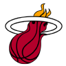

Week 11 Fantasy Football Early Waiver Wire Pickups: Xavier Hutchinson, Antonio Williams among top options
Who's looking good off the waiver wire? We examine some potential adds for fantasy football to start Week 11.
Every league’s headlines, every team’s news.

 Dolphins vs. Colts
Dolphins vs. Colts
 Chiefs vs. Falcons
Chiefs vs. Falcons

 Pacers at 76ers
Pacers at 76ers


 Flames vs. Kings
Flames vs. Kings


 Islanders vs. Ducks
Islanders vs. Ducks

Pistons at HeatWho's looking good off the waiver wire? We examine some potential adds for fantasy football to start Week 11.

Kenneth Walker III was out. Travis Kelce briefly left with injury. No problem for Patrick Mahomes' and his new weapons for the Chiefs' offense.

So far, so good for starting NFL quarterback Fernando Mendoza.

The Dolphins had a chance for their second win this season, but two missed field goals by Zane Gonzalez and a failed 2-point conversion allowed the Colts to hold onto a 24-22 win.

Cleveland is now 4-0 at home for the first time since 1963.

NFC South football has earned a negative reputation over the last few years and Sunday's game between the Panthers and Saints didn't do much to change that, but it did push one of the teams into first place in the race to represent the division in the playoffs.

The Dolphins did enough to win but come up short as kicking continues to be an issue.

The Carolina Panthers overcame an avalanche of penalties, some justified and a lot not, to defeat the New Orleans Saints on a last second field goal.

CeltsAreHere reports on X that Simon Ebonog is far more than another name on a long Celtic shortlist. The Le Havre midfielder is under serious consideration at Parkhead, and Celtic are monitoring him ...

Aston Villa have a right-back problem with the clock already running, and Unai Emery can do little except wait. According to GiveMeSport, Matty Cash took a blow to the chin from Daniel Birligea’s ar...

In a recent report, Het Laatste Nieuws stated that Manchester City are locked in a three-way battle for Club Brugge forward Nicolo Tresoldi. It has been mentioned that the Mancunian giants would have ...

The test between heavyweights Spain and England was always going to be entertaining, and that is what fans got this Sunday. The Nations League clash between the two has seen a handful of early chance...

Jamie Carragher Sends Liverpool Warning Ahead of Manchester United Clash at AnfieldLiverpool’s meeting with Manchester United promises to be one of the most intriguing fixtures of the Premier League...

Manchester United target Fulham's Calvin Bassey and Brentford's Nathan Collins, AC Milan want Real Madrid's Endrick on loan, plus more.

Speaking on the Transfer Insider podcast, journalist Pete O’Rourke offered an update on the future of Sunderland forward Brian Brobbey. O’Rourke said,“I think for now definitely it’s ruled out...

In a recent report, journalist Pete O’Rourke stated that Liverpool are eyeing a move for Lens defender Ismaelo Ganiou. It has been mentioned that the Reds are eager to get a deal done for the French...

LeBron James moved into third on the NBA's career assist list, leading the Philadelphia 76ers past the Indiana Pacers 131-124.

The Rockets’ Fred VanVleet has proven himself to be a winning player.

In another eventful week in the NBA, there were key injuries, a trade request and a historic performance from Cade Cunningham.
The Sixers don't have a single healthy center against the Pacers on Sunday other than Tacko Fall. This is fine!
The Sixers improved to 11-3 on Sunday by beating the Pacers without Joel Embiid.
Walker Kessler’s defensive impact has not only been as advertised, but goes far beyond the traditional box score.
The Phoenix Suns host the Los Angeles Lakers for an afternoon matinee.


With the Arizona Fall League wrapping up, let’s take a look at the Brewers prospects who participated

Cole Prosek was voted our No. 9 prospect; now, who is the 10th-best in the White Sox system?

Mostly a bad day for South Side awards, including Frank Thomas losing out as 2000 MVP

For several reasons, this 1919 game could not be repeated in today’s baseball.

A 36-year-old reliever, Hill was 5-2 with a 4.60 ERA and two saves in 58 2/3 innings over 67 appearances last season.
And after a four-hour interview in San Diego with Randy Flores, who owner Jim Crane chose as GM, Ausmus emerged as the man for the job, bringing him back to the city where he starred as a player.
*State Go Cards.

The Avalanche add experienced defenseman Mike Reilly off waivers from the reigning Stanley Cup champion Hurricanes as injuries continue to thin out Colorado's blue line.


The Vancouver Canucks take on the Vegas Golden Knights on Sunday.

Every Sunday of the NHL season, Mike Fink empties the notebook with some thoughts, quick hits, and anything in between on the New Jersey Devils.

The Buffalo Sabres traded Devon Levi because they didn't have room or use for him in their goaltending system, but four months later, he recorded a shutout for the Edmonton Oilers while Buffalo is struggling in net.

Vancouver has re-called goaltender Nikita Tolopilo from the AHL ahead of a back-to-back against Vegas and Utah.

It doesn't appear Amanda Nunes will be retiring again just yet after her UFC 334 defeat to Kayla Harrison.

UFC superstar Alex Pereira claimed that the Ciryl Gane vs. Josh Hokit UFC heavyweight title bout at UFC 334 was a “robbery.”The main event of UFC 334 was a closely fought, five-round war that saw Gane win a unanimous decision with three 48-47 scorecards in his favor.But while UFC president Dana White said he thought…

Ciryl Gane defended his title but got booed in New York. He deserves a fight in France where fans will cheer, not jeer, for his record-breaking night.

Josh Hokit doesn't seem thrilled.

Dana White had only good things to say about Josh Hokit on Saturday night. The polarizing heavyweight contender failed in his first attempt to become champion at UFC 334.
Josh Hokit suffered his first professional loss at UFC 334, but the pace he kept against heavyweight champion Ciryl Gane changed UFC CEO Dana White’s opinion of him.
Stephen Thompson ended his mixed martial arts career with a spinning wheel kick, stopping Charles Radtke in the third round at UFC 334 on Saturday at Madison Square Garden in New York.
Alex Pereira congratulated Josh Hokit backstage at UFC 334 on Saturday, telling him he thought he had beaten Ciryl Gane despite the judges’ unanimous decision for the reigning heavyweight champion.